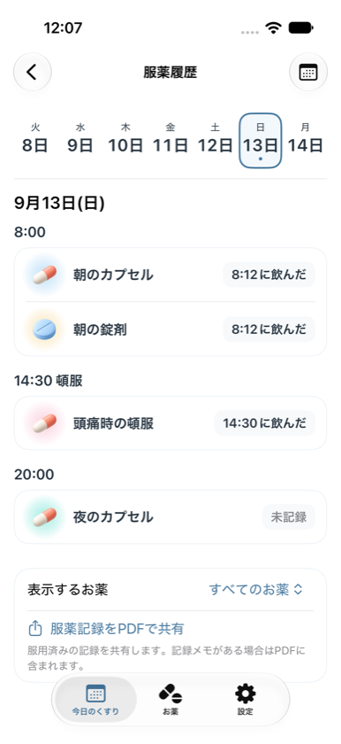

予定を見渡す
今日のお薬と飲む時間を確認。飲んだらその場で記録できます。
お薬を続ける毎日に
飲む時間を確かめて、飲んだことを残す。
「くすりのしるし」は、毎日の服薬管理を支えるiPhoneアプリです。
iPhone向けアプリ。Apple Watchにも対応しています。

画面は架空のデータを使った例ですできること
今日のお薬と飲む時間を確認。飲んだらその場で記録できます。
手入力に加え、お薬手帳用QRコードからも薬の情報を取り込めます。
飲んだ薬の記録をPDFにまとめ、診察時に共有できます。
使い方ガイド
お薬の予定と飲んだ記録を、手元で確認できます。